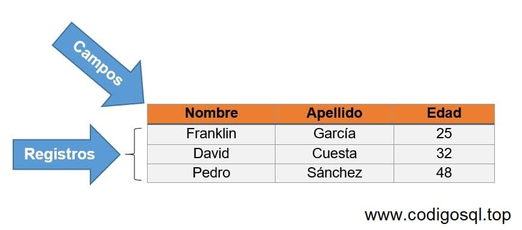

¿Por qué son Importantes las Bases de Datos?
Las bases de datos son el corazón de la mayoría de las aplicaciones modernas. Permiten:
- Almacenar grandes volúmenes de información de forma estructurada.
- Acceder a los datos de manera rápida y eficiente.
- Mantener la integridad y consistencia de la información.
- Facilitar la toma de decisiones basadas en datos.
Desde aplicaciones empresariales hasta redes sociales y sistemas de comercio electrónico, las bases de datos son esenciales para gestionar y aprovechar la información de manera efectiva.
Explorando los Tipos de Bases de Datos
Existen diferentes tipos de bases de datos, cada una con sus propias características y ventajas. Algunas de las más comunes son:
Relacionales (SQL)

Organizan los datos en tablas con relaciones predefinidas. Ideales para aplicaciones empresariales y transaccionales.
- MySQL
- PostgreSQL
- Oracle
- Microsoft SQL Server
NoSQL

Flexibles y escalables, ideales para grandes volúmenes de datos no estructurados o semiestructurados.
- MongoDB
- Cassandra
- Redis
- CouchDB
La elección del tipo de base de datos depende de las necesidades específicas de cada aplicación.
Los Guardianes de los Datos: SGBD

Los Sistemas Gestores de Bases de Datos (SGBD) son software esenciales para interactuar con las bases de datos. Proporcionan herramientas para:
- Crear y modificar la estructura de la base de datos.
- Insertar, actualizar y eliminar datos.
- Realizar consultas complejas para extraer información específica.
- Administrar la seguridad y el acceso a los datos.
Algunos SGBD populares incluyen MySQL, PostgreSQL, Oracle, MongoDB y muchos otros.
Conceptos Fundamentales
Comprender los siguientes conceptos es clave para trabajar con bases de datos:
Tablas
Las tablas son la estructura básica para organizar los datos. Cada tabla representa una entidad o concepto y se compone de filas y columnas.
Registros
Cada fila dentro de una tabla se conoce como un registro. Un registro representa una instancia única de la entidad que la tabla describe.
Campos
Las columnas dentro de una tabla se llaman campos. Cada campo define un tipo específico de dato que se almacenará en esa columna.
Atributos
Los atributos son características o propiedades asociadas a un campo. Por ejemplo, un campo "Nombre" podría tener atributos como longitud máxima o si permite valores nulos.